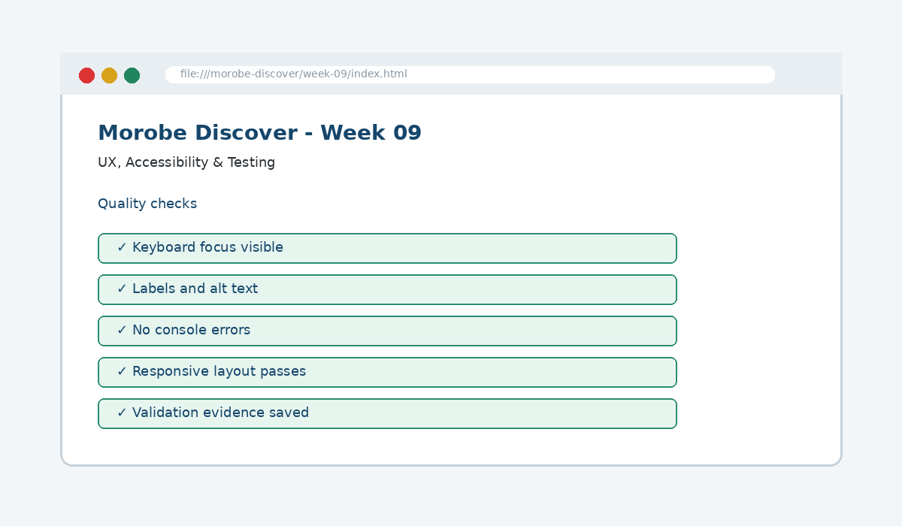

UX, Accessibility & Testing
Ensure the site is usable for people with different abilities and optimized for interface quality.

How this week's learning connects
1. Reading
Build the conceptual foundation and vocabulary for UX, Accessibility & Testing.
2. Lecture
Inspect the core principle, code patterns and visible browser result.
3. Lab
Complete the guided build tasks with checkpoints, testing and Git evidence.
4. Morobe Discover
Integrate the result into the same project and preserve earlier features.
Native HTML
Provides built-in accessibility when used correctly.
Visible focus
Shows keyboard users where interaction currently is.
Failure-path testing
Checks errors and edge cases, not only successful use.
Read the code line by line
.skip-link:focus {
position: static;
padding: .75rem;
}<label for="destinationSearch">Search destinations</label>
<input id="destinationSearch" type="search">What it does → Why it works → Where we use it
.skip-link:focus
Applies the rule when the skip link receives keyboard focus.position: static
Returns the focused link to normal page flow so it becomes visible.<label for=...>
Gives the search control an accessible visible name.type="search"
Communicates the purpose of the control to the browser and assistive technology.
Project connection: This code belongs to the Week 09 Morobe Discover increment and should produce a visible or testable change related to Keyboard support, accessible labels/focus and quality evidence.
Editable browser playground
Modify the example, run it, break it deliberately, and reset it. The preview is isolated from the course page.
Morobe Discover tasks
- Add or confirm labels and alt text
- Add visible focus styles
- Test the journey using keyboard only
- Document validation and accessibility checks
- Fix the highest-impact issues first
Checkpoint tests
Morobe Discover — Week 09
This is the actual source project increment supplied for this week.
Check your understanding
Knowing the definition is not enough
A weak submission can define UX, Accessibility & Testing but cannot point to the exact Morobe Discover file, code line and browser result. During code defence, be ready to connect code → visible behaviour → user reason → test evidence.
Prepare the next checkpoint
Week 10 returns to Web Storage in more depth and refines saved preferences.